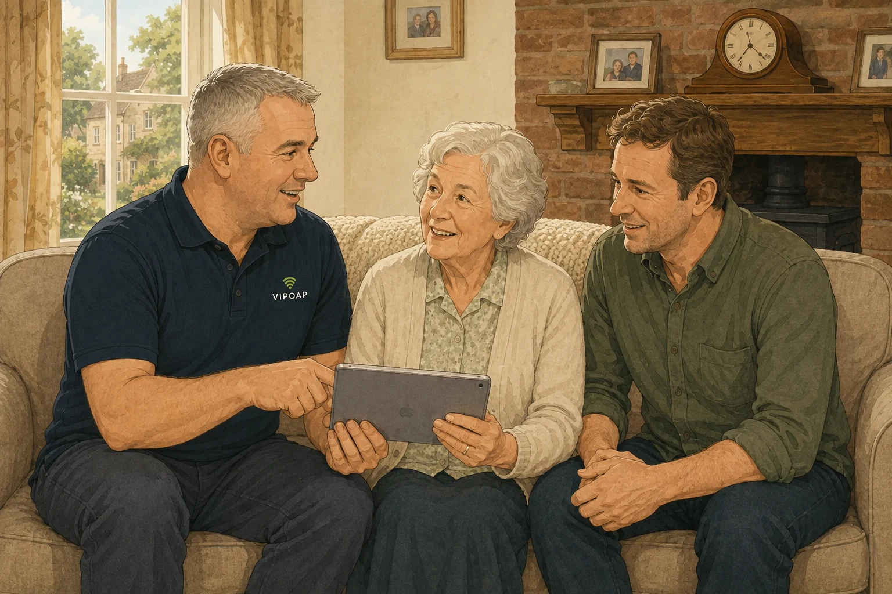

Tell us about your parent
Share their area, what they need help with and how they prefer to communicate.
If you live too far away to help in person, or technology is not your area, VIPOAP can be the patient local contact your parent can rely on.

Share their area, what they need help with and how they prefer to communicate.
Your parent remains in control. We record who may arrange visits, receive updates and manage payment.
A trained VIPOAP Engineer Partner visits patiently, records the work completed and explains what happens next.
You can arrange future visits or a support plan, while your parent has a familiar local person to call.
When you do not live nearby, even a small technology problem can be difficult to solve over the phone. A patient local Engineer Partner can visit, see what is happening and explain it without leaving your parent feeling rushed.
Our Engineer Partners cover defined local postcode areas, so wherever availability allows, the same familiar person can return for future visits. Your parent remains in control throughout.
With your parent's consent, you can arrange and pay for visits, be named as their trusted contact and receive a simple update about what was completed, any agreed costs and helpful next steps.
That gives you reassurance from a distance while protecting your parent's choices and privacy.
We only share visit information with an authorised family contact when the customer has agreed. Sensitive passwords, banking details and private communications are never included in routine updates.
Give your parent patient, practical help while keeping arrangements simple for the whole family.
Your parent can receive help from a local VIPOAP Engineer Partner who explains everything clearly and works at their pace.
With your parent's permission, we can confirm what was completed, what it cost and whether any follow-up is recommended.
We can help in the home where local coverage is available, or remotely when the problem can be resolved safely from a distance.
Yes. You can arrange the appointment and payment, while your parent remains in control of the support provided in their home or during a remote session.
Yes, when your parent has agreed. We can provide a clear summary of the work completed, any agreed costs and sensible next steps.
VIPOAP can assist with Wi-Fi, broadband, computers, phones, tablets, printers, smart televisions, video calls and everyday online safety.
We may still be able to provide secure remote support. If an in-home visit is needed, we will explain honestly whether local support is currently available.
If VIPOAP is not in their area yet, we may still be able to help remotely. We will also record the area as part of our UK expansion.